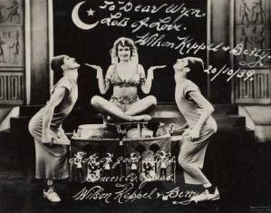

Friday, February the 7th, 2014
back to: title, date or indexes
Today the Guardian yet again employs the preposterous Russell Brand as a commentator. This time his overwritten wittering is about the death of Philip Seymour Hoffman, which gives the “alleged comedian” (© Peter Hitchens) another opportunity to tell us that he is a recovering addict. Well, who knew? He may indeed be recovering from drink and drugs, but I think it's time he sought help for his pitiable addiction to babbling on and on about himself. Several decades in a Trappist monastery would be ideal.
Which brings us to the more important topic of Mr Key, or rather to his cupboard in The Dabbler, which today contains a piece about the role played by comedians in the governance of Britain. Warning: I am afraid Brand is mentioned there again—I really must get a grip!—though only in passing, and you lot will be able to sluice him out of your brains by contemplating, instead, such stars of yesteryear as Wilson, Keppel, and Betty.
